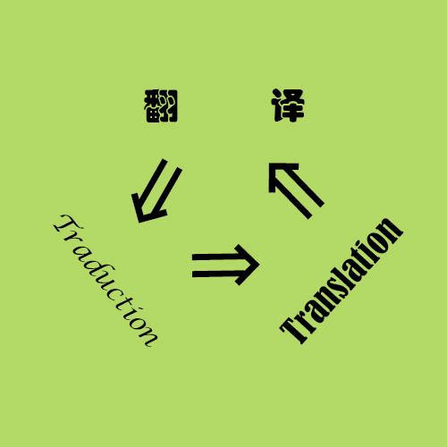

Curieuse des nouvelles technologies, ma passion de création web a débuté en été en 2015 grâce à un programme bénévole d'enseignement de la programmation aux femmes. Ce premier apprentissage m'a permis ensuite de postuler à la formation CAWEB de l'Université de Strasbourg. Après un semestre d'étude dans cette formation polyvalente, voici mon premier site personne sur la base de HTML et CSS.
5 années de parcours professionnel dans le domaine de traduction, je n'en reste pas moins intéressée à ce métier de communication entre deux langues et deux cultures. Expériences notamment dans la traduction des spécifications techniques, l'évolution de la traduction automatique (TA) et de la traduction assistée par l'ordinateur (TAO) m'a poussé à adapter les nouveaux outils dans mon travail de traduction. C'est ainsi que j'ai obtenu le certificat de SDL Trados Studio 2019 après l'utilisation de cet outil pendant mon emploi précédent et l'étude approfondie de cette application dans CAWEB.
Cuisine chinoise, c'est la clé qui m'aide à m'adapter si vite à la vie dans un pays étranger. Grâce à la mondialisation et surtout aux supermarchés asiatiques (grand gratitude!),je peux dupliquer les mets chinois. Avoir le saveur de famille sur la langue est le remède à la nostalgie. Bien entendu, je ne peux pas me passer de la cuisine française! Quiche, flamme, salade lyonnaise, tarte aux fruit...tant de recettes à explorer ! Et là pour la première fois je me sers de la balance pour la cuisine...Et oui, le secret de la cuisine chinoise c'est d'assaisonner par la sensation :p. D'où des miliers et des miliers échecs...